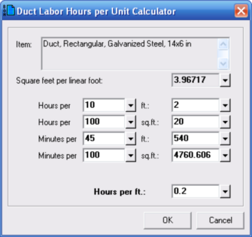
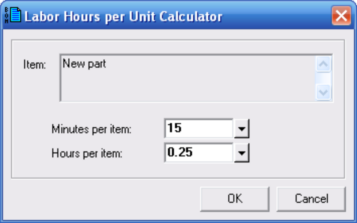

Labor Hours Calculators (Bill of Materials Parts Database Window, Project Bill of Materials Window) |
  
|
Labor Hours Calculators (Bill of Materials Parts Database Window, Project Bill of Materials Window) |
|
For parts of type Duct, you can use the following dialog to help you determine how many hours of labor are used for that duct. For example, if you knew that it took 20 man-hours to install 100 square feet of 14x6 galvanized steel duct, you could enter "Hours per 100 sq.ft.: 20" in the second row of inputs, as shown in the below picture. For that example the resulting hours per linear foot would be 0.2, as shown in the Hours per ft. input at the bottom. All of the other inputs are adjusted automatically as you type in a new value into any of these inputs.

For parts other than those of type Duct, a dialog like the following one will be used. This dialog lets you choose between entering the number of minutes of labor for the item or the number of hours. As you enter a value into either one of these inputs the other one is updated.
